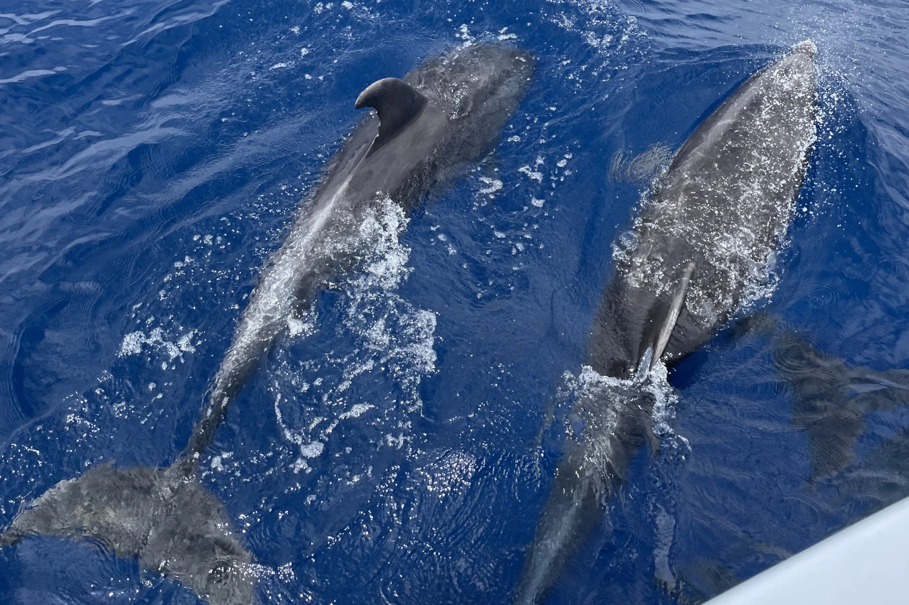
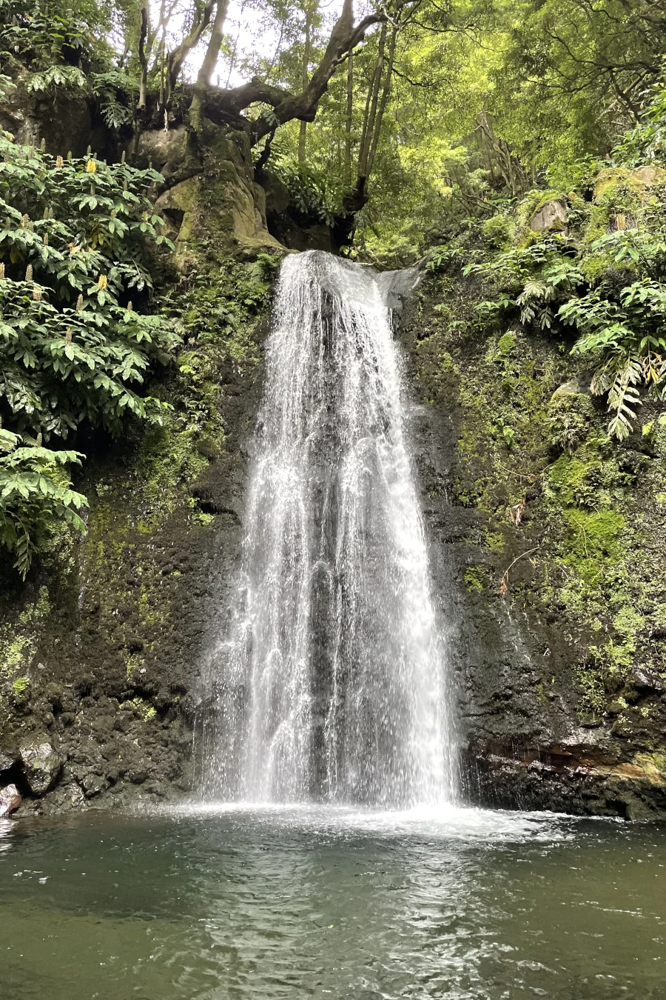
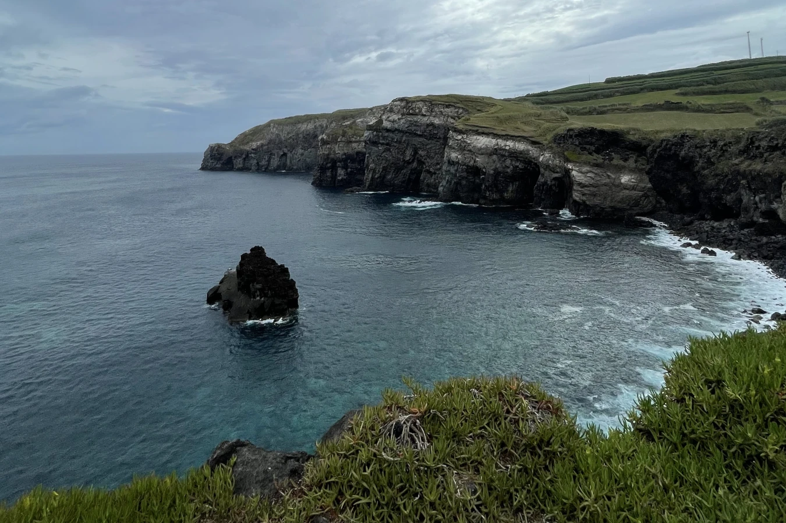

São Miguel


Tipps
- Mietwagen nehmen
- Kleidung für jedes Wetter, da sehr wechselhaft
- Mindestens eine Woche einplanen
- Hortensienblüte: Juni bis September


Sehenswürdigkeiten
- Wanderung: Salto do Prego
- Heiße Quellen zum Baden
- Viele Seen
- Delfin- und Walbeobachtung